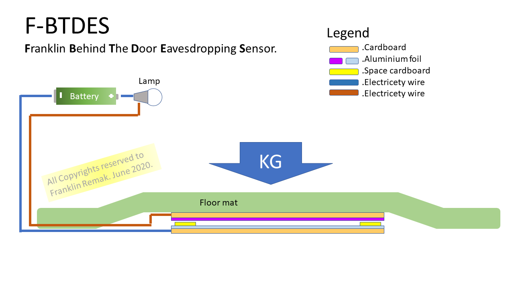
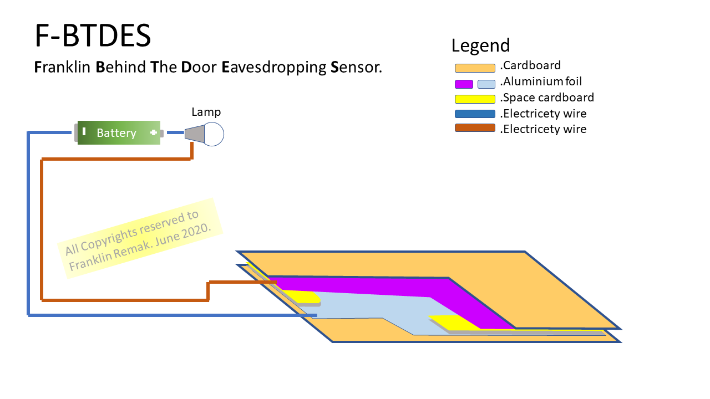

F-BTDES
Franklin Behind The Door Eavesdropping Sensor
Often people are behind the door listening to what you say.
How can you know if that is happening now? Place a thin sensor under your floor mat.
When they stand on your mat to listen, a sensor light turns on.
below you will find a diagram of how the sensor mat is constructed
tell me if it works for you or give me a like :D

What happens:
the weight on the sensor/mat presses the indicated in purple
aluminum foil against the blue-gray indicated aluminum foil.
This creates a closed circuit, causing the lamp to light up.
